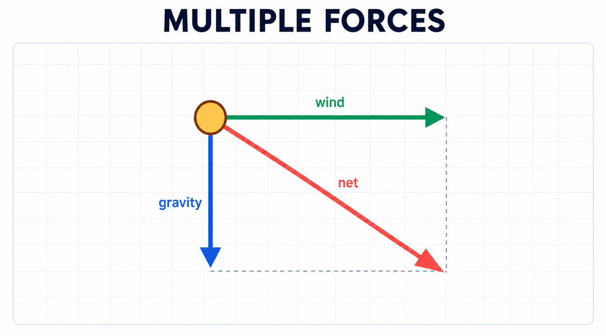
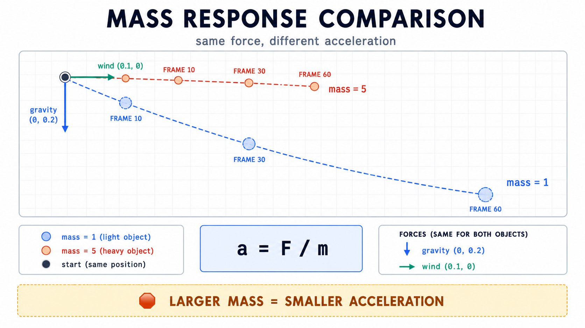
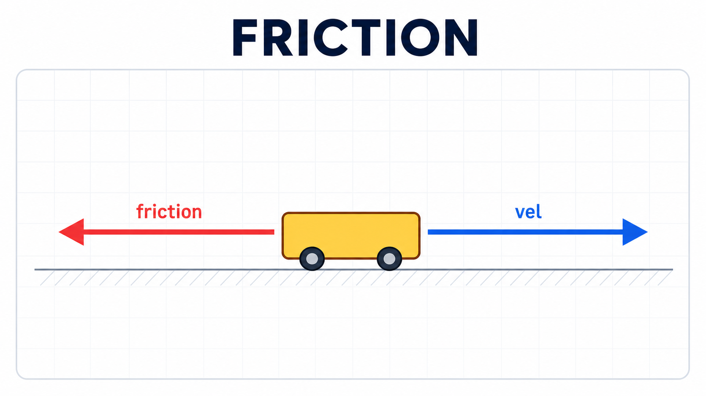
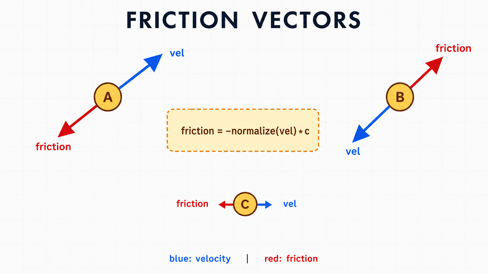
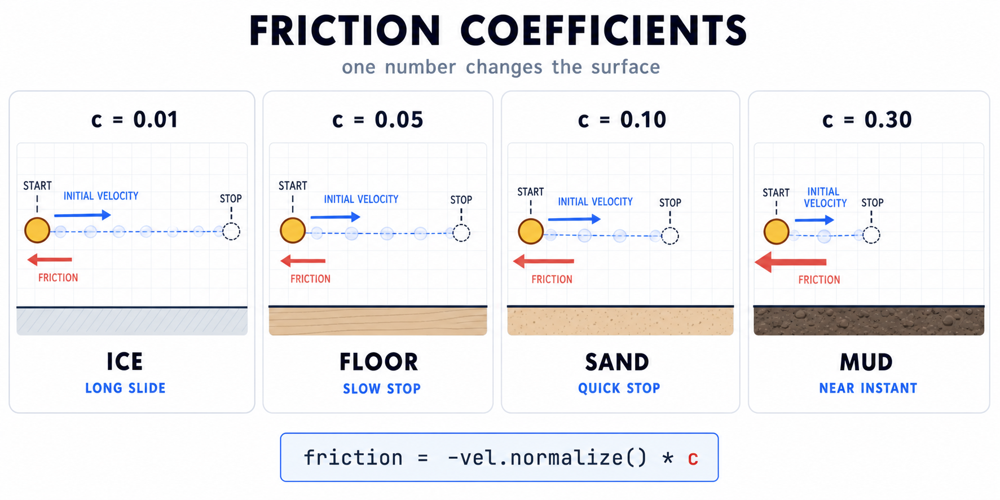
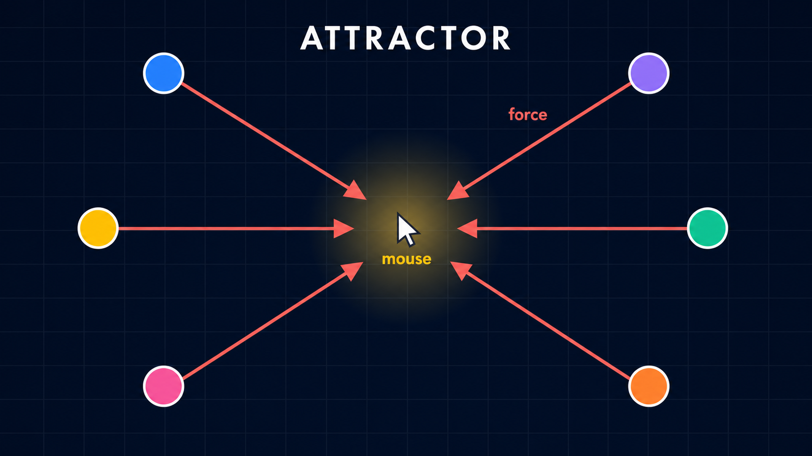

10주차 2교시 — 다중 힘, 질량 차이, 마찰력
강의 아웃라인: week-10-outline 이전 교시: week-10-period1-student (뉴턴 제2법칙과 applyForce() 패턴) 다음 교시: week-10-period3-student (학생 주도 실습)
| 항목 | 내용 |
|---|---|
| 대상 | P5.js 입문자 (테크아트 전공) |
| 소요 시간 | 45분 |
| 사전 준비 | 1교시 applyForce 패턴 + 중력 |
-
applyForce()를 두 번 이상 호출하여 여러 힘을 동시에 적용하고, 합력 개념을 이해한다 - 질량(mass)이 다른 객체들이 같은 힘에 다르게 반응하는 시뮬레이션을 만든다
- 마찰력(friction)을 ‘브레이크’ 비유로 이해하고 코드로 구현한다
- 9주차 정적 메서드 패턴(
p5.Vector.mult/sub/div)을 일관되게 사용한다
1교시에서 만든 “applyForce + 중력 하나” 구조에 바람 + 질량 + 마찰력을 차례로 더해 더 복합적인 물리 시뮬레이션으로 확장합니다.
1교시 복습
본격적으로 새 내용에 들어가기 전에, 1교시 핵심을 간단한 퀴즈로 점검해 봅시다.
답: a = F / m 또는
let f = p5.Vector.div(force, this.mass).
답: applyForce().
답: 9주차처럼 정적 메서드로 통일하기 위함입니다. 원본
force를 변경하지 않고 새 벡터를 반환받기 위해
사용합니다.
답: 이 코드에서는 힘을 매 프레임 acc에 새로 누적합니다. 초기화하지 않으면 이전 프레임의 acc가 남아 속도가 비정상적으로 커집니다.
1교시에서는 중력 하나, 질량 1까지 다뤘습니다. 오늘은 다음 세 가지를 차례로 추가합니다.
- 1⃣ 바람 —
applyForce()를 두 번 호출하면 힘이 누적된다는 의미를 확인합니다. - 2⃣ 질량 차이 — 같은 힘에 다르게 반응하는 객체들을 동시에 만듭니다.
- 3⃣ 마찰력 — ‘브레이크’ 비유로 속도를 줄이는 힘을 구현합니다.
이 세 가지를 마치면 움직임이 더 자연스럽고 복합적으로 보입니다.
applyForce() 메서드는 1교시 그대로
사용하며, 본체를 수정하지 않습니다. 새 힘을 추가해도
applyForce() 본체는 그대로라는 점이 이 패턴의
강점입니다.
짧은 9주차 벡터 복습 — 오늘 사용할 도구
오늘 마찰력 구현에서는 9주차에 처음 배운 벡터 연산을 한꺼번에 사용합니다. 표로 미리 복습해 둘 테니, 막히면 이 표로 돌아옵시다.
| 9주차 연산 | 의미 | 오늘 사용처 |
|---|---|---|
createVector(x, y) |
벡터 생성 | gravity, wind 생성 |
vec.add(other) |
누적 (자기 자신 변경) | acc.add(f) — 가속도 누적 |
p5.Vector.sub(a, b) |
도착-출발 벡터 (정적, 새 벡터 반환) | 마우스 향한 방향 계산 |
p5.Vector.mult(vec, n) |
n배 벡터 (정적) | mult(vel, -1) — 마찰 반대 방향 |
p5.Vector.div(vec, n) |
n으로 나눈 벡터 (정적) | div(force, mass) — F/m=a |
vec.normalize() |
크기를 1로 (자기 자신 변경) | 마찰력 방향만 추출 |
vec.mag() |
벡터 길이 (스칼라 반환) | 속도 크기, 거리 계산 |
9주차에서 통일한 원칙대로, 새 벡터가 필요할 때는
p5.Vector.~ 정적
메서드(mult/div/sub)를 사용합니다. 자기 자신을
변경할 때는 .add() / .normalize() / .mult() 인스턴스
메서드를 사용합니다. 이 구분만 지켜도 자주 발생하는 실수의 상당수를
예방할 수 있습니다.
심화 개념 1 — 바람 추가: 여러 힘의 누적
1교시에서는 중력 하나만 적용했습니다. 이제
바람(wind)을 추가합니다. 핵심 질문은 이것입니다.
applyForce()를 두 번 호출하면 어떻게
될까요?
이번에도 단계적으로 진행합니다. 1교시 코드에서 출발해 한 줄, 다시 한 줄을 추가하는 방식입니다.
Step 1. 출발점 — 1교시 마지막 코드 (중력만)
1교시 끝에서 만든 코드 그대로입니다.
function draw() {
background(220);
let gravity = createVector(0, 0.2);
mover.applyForce(gravity);
mover.update();
mover.edges();
mover.display();
}공이 아래로 떨어지며 바닥에서 튕깁니다. 여기에 바람을 추가해 봅시다.
Step 2. 바람 벡터 만들기
중력과 마찬가지로 바람도 단순한 벡터입니다. 차이는 미는 방향뿐입니다.
let wind = createVector(0.1, 0);x = 0.1(오른쪽으로 약간), y = 0(위아래로는 작용하지 않음). 이는 ’오른쪽으로 부는 약한 바람’을 뜻합니다.
수치는 자유롭게 정할 수 있습니다. 0.5는 강한 바람,
-0.1은 왼쪽 바람을 의미합니다. 9주차의
createVector를 그대로 사용합니다.
Step 3. 바람 적용 —
applyForce() 한 줄 추가
function draw() {
background(220);
let gravity = createVector(0, 0.2);
let wind = createVector(0.1, 0); // ← 새 줄
mover.applyForce(gravity);
mover.applyForce(wind); // ← 새 줄
mover.update();
mover.edges();
mover.display();
}applyForce()를 두 번 호출했습니다. 중력과 바람이
동시에 작용하는 구조입니다.

내부에서 어떤 일이 일어나는지 한 줄씩 따라가 봅시다. 1교시
applyForce 메서드의 핵심은
this.acc.add(f)였습니다.
applyForce(gravity)호출 → acc에 (0, 0.2) 누적. 현재 acc = (0, 0.2)applyForce(wind)호출 → acc에 (0.1, 0)이 추가로 누적. 현재 acc = (0.1, 0.2)- update() → 합쳐진 가속도 (0.1, 0.2)로 속도가 변경됨
최종 가속도는 (0.1, 0.2)이며 오른쪽 아래 대각선 방향입니다. 중력(아래) + 바람(오른쪽)이 합쳐져 오른쪽 아래로 기울어진 포물선 운동이 됩니다. 공을 옆으로 던졌을 때의 궤적과 유사합니다.
이것이 add 패턴의 의미입니다. 새 힘을 추가해도
Mover의 핵심 코드는 그대로 유지됩니다. 실제로
applyForce 안의 4줄은 수정하지 않고,
applyForce(wind) 한 줄만 추가했습니다.
물리학에서는 이를 합력(net force)이라 부릅니다. 여러
힘을 벡터로 더한 결과이며, applyForce()를 호출할 때마다
자동으로 계산됩니다.
마우스 클릭으로 바람 방향 전환
간단한 인터랙션을 추가해 봅시다. 마우스를 클릭할 때마다 바람 방향이 반대로 전환됩니다.
let windDirection = 1; // 1 = 오른쪽, -1 = 왼쪽
function draw() {
background(220);
let gravity = createVector(0, 0.2);
let wind = createVector(0.1 * windDirection, 0);
mover.applyForce(gravity);
mover.applyForce(wind);
mover.update();
mover.edges();
mover.display();
}
function mousePressed() {
windDirection *= -1; // 클릭할 때마다 방향 반전
}클릭할 때마다 windDirection이 1과 -1을 오가며 바람
방향이 전환됩니다. 4주차에서 배운 mousePressed()를 활용한
형태입니다.
힘을 3개, 4개 추가해도 동일한 방식입니다. applyForce()를
추가로 호출하기만 하면 됩니다.
중력 (0, 0.2)와 바람 (0.1, 0)을 동시에
적용하면, 최종 가속도는 어떻게 될까요?
답: (0.1, 0.2). 두 벡터를 더한 값입니다.
심화 개념 2 — 질량(mass)에 따른 차이
1교시에서는 mass를 1로 고정했습니다.
a = F / 1 = F이므로 사실상 F = a인 단순한
상태였습니다. 이제 mass를 다양하게 부여해 본격적인 차이를
만들어 봅시다.
볼링공과 탁구공을 같은 세기로 밀면 탁구공이 훨씬 많이 움직입니다. 같은 힘이라도 질량이 다르므로 가속도가 달라지기 때문입니다. 1교시에서 표로 살펴본 그 차이를 이제 코드로 구현해 봅시다.
이번 변경은 네 곳입니다. 한 곳씩 짚어 가며 진행합니다.
Step 1. constructor에 mass 매개변수 추가
class Mover {
constructor(x, y, mass) {
this.pos = createVector(x, y);
this.vel = createVector(0, 0);
this.acc = createVector(0, 0);
this.mass = mass; // 질량을 매개변수로 받음
}
applyForce(force) {
let f = p5.Vector.div(force, this.mass); // a = F / m (그대로)
this.acc.add(f);
}
update() {
this.vel.add(this.acc);
this.pos.add(this.vel);
this.acc.set(0, 0);
}
edges() {
let r = this.mass * 8; // display()의 지름(this.mass * 16)에 맞춘 반지름
if (this.pos.x > width - r) { this.pos.x = width - r; this.vel.x *= -1; }
if (this.pos.x < r) { this.pos.x = r; this.vel.x *= -1; }
let floor = height - r;
if (this.pos.y > floor) {
this.pos.y = floor;
if (abs(this.vel.y) > 1) {
this.vel.y *= -0.9;
} else {
this.vel.y = 0;
}
}
}
display() {
stroke(0);
fill(175, 200);
ellipse(this.pos.x, this.pos.y, this.mass * 16); // 질량에 비례하는 크기
}
}달라진 부분을 한 군데씩 살펴봅시다.
변경 1 — constructor 시그니처:
constructor(x, y) → constructor(x, y, mass).
새 객체를 만들 때 질량을 매개변수로 받기 위함입니다. 7주차 클래스에서
배운 매개변수 추가 패턴입니다.
변경 2 — 질량 저장: this.mass = mass.
받은 mass 값을 객체의 속성으로 저장합니다. 각 객체가 자신의
질량을 기억하게 됩니다.
변경 3 — 시각화에 질량 반영:
display()에서
ellipse(this.pos.x, this.pos.y, this.mass * 16). 질량 1인
공은 지름 16px, 질량 5인 공은 80px이 됩니다. 무거운 객체는 큰
원, 가벼운 객체는 작은 원으로 보여 주어 질량 차이가 시각적으로
드러나게 합니다.
변경 4 — edges 좌우 추가: 1교시에서는 바닥(y)만
체크했지만, 바람이 좌우로 밀면 화면 좌우로도 벗어날 수 있습니다. 따라서
좌우 벽 처리 두 줄을 추가합니다. 또한 원의 중심이 아닌 원의
가장자리가 벽과 바닥에 닿도록 r = this.mass * 8로
보정합니다.
applyForce() 본체는 한 줄도 변경되지 않았습니다. 1교시에
만든 그대로입니다. 다만 mass가 다양해진 시점부터는
applyForce() 안의
p5.Vector.div(force, this.mass)가 객체마다 다른
mass로 나누므로, 같은 force를 적용해도
객체마다 다른 가속도가 나옵니다. 이것이 1교시에서 준비한 구조의
의미입니다. 클래스 본체는 그대로 두고, mass 데이터만
다양해져도 움직임의 차이가 드러납니다.
Step 2. 질량이 다른 객체 여러 개 만들기
let movers = [];
function setup() {
createCanvas(600, 400);
for (let i = 0; i < 5; i++) {
movers.push(new Mover(random(width), 50, random(1, 5)));
}
}
function draw() {
background(220);
let gravity = createVector(0, 0.2);
let wind = createVector(0.05, 0);
for (let mover of movers) {
mover.applyForce(gravity);
mover.applyForce(wind);
mover.update();
mover.edges();
mover.display();
}
}7주차에서 배운 객체 배열이 여기서 다시 등장합니다.
movers = []에 Mover 객체 5개를 담고,
for...of로 모두 업데이트합니다.
핵심은 같은 gravity, 같은 wind를 모든 객체에 적용하지만 질량이 다르므로 각각 다르게 반응한다는 점입니다.
실행 결과: - 작은 원(가벼운 객체): 바람에 많이 밀리고 빠르게 떨어짐 → 가속도가 큼 - 큰 원(무거운 객체): 바람에 조금만 밀리고 느리게 떨어짐 → 가속도가 작음 - 각 원이 서로 다른 궤적으로 움직임
같은 힘인데 다르게 움직이는 모습을 관찰할 수 있습니다. 이것이 바로 a = F / m의 의미입니다. m이 크면 a가 작아지므로 반응이 둔해집니다. 1교시에서 표로 살펴본 볼링공/탁구공의 차이가 코드로 구현된 형태입니다.
한 줄 메모 — 현실 중력은 다르다
현실 중력에 대해 짧게 보충합니다. 진공에서 깃털과 볼링공을 떨어뜨리면 같은 속도로 떨어집니다. 아폴로 우주인이 달에서 실험한 유명한 영상에서 확인할 수 있습니다.
이는 중력의 크기가 질량에 비례하기 때문입니다. F = mg → a = F/m = mg/m = g. 질량이 약분되어 동일한 가속도가 됩니다.
코드에서는
let gravityForce = p5.Vector.mult(gravity, mover.mass); mover.applyForce(gravityForce);처럼
중력 벡터에 질량을 곱한 새 벡터를 적용하면 현실 모델에
가까워집니다. 원본 gravity를 직접 변경하는
gravity.mult(...)는 여러 객체를 순회하는 루프에서 값이 계속
변할 수 있으므로 피합니다.
다만 미디어아트에서는 ’무거우면 천천히 떨어진다’는 단순
모델이 시각적으로 더 흥미롭습니다. 이 자료에서는 이 단순 모델을
사용합니다. 더 실험해 보고 싶다면
p5.Vector.mult(gravity, mover.mass) 방식을 시도해 보아도
좋습니다.
질량이 5인 무거운 공과 질량이 1인 가벼운 공에 같은 wind
(0.1, 0)을 적용하면, 가속도는 각각 얼마일까요?
답: 무거운 공은 0.1/5 = 0.02, 가벼운 공은 0.1/1 = 0.1. 가벼운 공이 5배 빠르게 옆으로 밀립니다.
이미지로 비교 — mass=1 vs mass=5
둘 다 출발점은 (200, 50), 초기 속도는 (0, 0)입니다. gravity = (0, 0.2), wind = (0.1, 0)이고, 마찰력은 아직 없는 상태에서 두 궤적을 비교합니다.

이미지에서 보이는 핵심은 두 공이 같은 힘을 받지만 서로 다른
궤적을 만든다는 점입니다. 가벼운 공은 합산 가속도
(0.1, 0.2), 무거운 공은 (0.02, 0.04)가 되어
5배 차이가 납니다. 이 차이가 매 프레임 누적되면서 60프레임 뒤 위치
차이로 크게 드러납니다.
가장 중요한 점은 applyForce() 메서드가 한 줄도
변경되지 않았다는 것입니다. mass 데이터 하나만
달라진 결과입니다.
심화 개념 3 — 마찰력: ‘브레이크’ 비유로 풀이
지금까지 중력과 바람을 살펴봤습니다. 둘 다 한 방향으로 미는
힘입니다. 마찰력은 성격이 조금 다릅니다. 비유 → 코드 → 실험, 세
단계로 풀어 봅니다. 9주차에서 sub()를 설명할 때 사용한
방식과 동일합니다.
Step 3-1. 비유로 시작 — 마찰력은 ‘브레이크’
마찰력은 브레이크에 비유할 수 있습니다. 차가 어느 방향으로 달리든 브레이크는 그 반대 방향으로 작용합니다.
오른쪽으로 가던 공을 멈추려면 왼쪽으로 잡아당겨야 합니다. 위로 던진 공은 단순히 아래로 잡아당기는 것이 아니라, 공이 가는 방향의 반대로 잡아당기는 것이 마찰입니다.

마찰력의 두 가지 핵심 특성은 다음과 같습니다.
- 방향: 항상
vel(속도)의 반대 방향. 어디로 향하든 그 반대로 작용합니다. - 크기: 마찰계수
c로 결정됩니다. 얼음 위에서는 작고, 모래 위에서는 큽니다.
중력은 항상 아래로, 바람은 항상 한 방향으로 작용했지만 마찰력은 물체마다 방향이 다를 수 있습니다. 오른쪽으로 가는 물체에는 왼쪽 방향의 마찰력, 왼쪽으로 가는 물체에는 오른쪽 방향의 마찰력이 작용합니다. 따라서 마찰력은 매 프레임마다, 매 객체마다 새로 계산해야 합니다.
Step 3-2. 코드로 옮기기 — 한 줄씩 빌드업
비유를 코드로 옮기면 4줄입니다. 9주차에서 통일한 정적
메서드 패턴(p5.Vector.~)을 사용하며, 이번에도
한 줄씩 추가하면서 각 줄이 왜 필요한지 함께
살펴봅니다.
v1. vel을 그대로 사용하기 (문제 확인용)
단순하게 시작합니다. 마찰력이 vel과 관련 있으니 vel을 그대로 사용하면 어떻게 될까요?
let friction = mover.vel;
mover.applyForce(friction);여기에는 두 가지 문제가 있습니다. 첫째, 방향이
같습니다 — 진행 방향과 같은 방향으로 미는 것은 가속이지 마찰이
아닙니다. 둘째, mover.vel을 직접 참조하면
이후 코드에서 수정될 위험이 있습니다.
문제를 하나씩 해결해 봅시다.
v2. 반대 방향으로 — -1
곱하기
마찰의 핵심은 vel의 반대 방향이므로
-1을 곱해야 합니다. 다만 vel.mult(-1)로
처리하면 vel 원본이 반대로 뒤집히는 문제가 있습니다.
9주차에서 배운 정적 메서드로 안전하게 새 벡터를
만듭니다.
let friction = p5.Vector.mult(mover.vel, -1);
mover.applyForce(friction);p5.Vector.mult(mover.vel, -1)는 vel에 -1을
곱한 새 벡터를 만들어 friction에 담습니다.
mover.vel은 변경되지 않습니다. 1교시의
p5.Vector.div, 9주차의 p5.Vector.sub와 동일한
안전 패턴입니다.
다른 책에서는 mover.vel.copy().mult(-1)처럼 쓰기도
합니다. 결과는 같지만, 이 자료에서는 9주차부터 통일한 정적 메서드를
사용합니다. 기억해야 할 표기가 줄어듭니다.
이제 방향은 정확히 vel의 반대입니다. 다만 크기가
너무 큽니다 — 빠르게 움직이는 공일수록 마찰력도 비례해 커지므로
거의 즉시 정지해 버립니다. 자연스러운 마찰은 일정한 크기를 유지해야
합니다.
v3. 방향만 남기기 —
normalize()
9주차에서 배운 normalize()를 사용합니다. 벡터의
크기를 1로 만들어 방향만 남깁니다.
let friction = p5.Vector.mult(mover.vel, -1);
friction.normalize();
mover.applyForce(friction);이제 friction은 방향만 있고 크기는 1인 단위벡터입니다. 어떤 속도이든 일정한 크기 1짜리 마찰이 작용합니다.
다만 크기 1은 너무 강합니다. 한 프레임에 1만큼 줄어들면 속도가 급격히 꺾여 부자연스러울 수 있습니다. 마찰계수로 적절히 축소해야 합니다.
v4. 마찰계수로 크기 조절 —
mult(c)
let c = 0.05; // 마찰계수
let friction = p5.Vector.mult(mover.vel, -1); // 반대 방향
friction.normalize(); // 크기 1
friction.mult(c); // 크기 c로 축소
mover.applyForce(friction); // 힘으로 적용c = 0.05이면 friction의 크기는 0.05입니다. 한 프레임에
미세하게만 작용하므로 자연스럽게 감속되는 움직임이 만들어집니다.
반대 → 정규화 → 강도 조절 → 적용. 네 단계 모두 의미가 있습니다. 한 단계라도 빠지면 동작은 하지만 부자연스러워집니다.
마지막 줄은 mover.applyForce(friction)입니다.
마찰력도 결국 하나의 힘일 뿐입니다. 1교시의
applyForce 메서드가 그대로 동작합니다. 내부에서
this.acc.add(f)로 누적되어 중력·바람과 함께 합력을
이룹니다.
숫자로 보는 마찰 — vel=(3, 4), c=0.05일 때
좀 더 구체적으로 살펴봅시다. 어떤 객체의 속도가 (3, 4)이고 마찰계수 c=0.05라면 마찰력 벡터는 어떻게 계산될까요?
| 단계 | 연산 | 결과 |
|---|---|---|
| 0. 시작 | mover.vel = (3, 4), 길이 √(9+16) = 5 | — |
| 1. p5.Vector.mult(vel, -1) | (3, 4) × -1 = (-3, -4) | friction = (-3, -4) (길이 5) |
| 2. .normalize() | (-3/5, -4/5) = (-0.6, -0.8) | friction = (-0.6, -0.8) (길이 1) |
| 3. .mult(0.05) | (-0.6 × 0.05, -0.8 × 0.05) | friction = (-0.03, -0.04) |
| 4. applyForce(friction) | acc.add(friction / mass) → mass=1이면 acc에 (-0.03, -0.04) 누적 | — |
관찰:
- 방향: friction = (-0.03, -0.04). vel (3, 4)와 정확히 반대 방향이며, 비율도 동일합니다 (-3:-4 = 3:4).
- 크기: vel의 길이가 5였지만 friction의 길이는 0.05 — c와 정확히 일치합니다. 어떤 vel이 입력되어도 normalize 처리 덕분에 friction의 크기는 항상 c가 됩니다.
- 감속 효과: 매 프레임 acc에 (-0.03, -0.04)가 누적되므로 vel이 (3, 4)에서 (2.97, 3.96), (2.94, 3.92)로 천천히 줄어듭니다. 방향은 거의 유지되지만 크기가 점차 작아지는 형태입니다.
- 정지 시점: vel 크기가 c와 비슷해지면 한 프레임 만에
vel 부호가 반전될 수 있으며, 작은 떨림이 발생합니다. 따라서 실제
코드에서는 vel 크기가 너무 작을 때 별도
처리(
if (vel.mag() < c) vel.set(0, 0))를 추가해 정지 상태를 만듭니다.
draw()에 마찰력 적용 — 합쳐 보기
function draw() {
background(220);
let gravity = createVector(0, 0.2);
let wind = createVector(0.05, 0);
for (let mover of movers) {
// 마찰력 계산 (객체마다 속도가 다르니까 각자 따로 계산)
let c = 0.05;
if (mover.vel.mag() < c) {
mover.vel.set(0, 0);
} else {
let friction = p5.Vector.mult(mover.vel, -1);
friction.normalize();
friction.mult(c);
mover.applyForce(friction); // 마찰력
}
mover.applyForce(gravity); // 중력
mover.applyForce(wind); // 바람
mover.update();
mover.edges();
mover.display();
}
}applyForce()를 세 번 호출했습니다.
마찰력 + 중력 + 바람이 동시에 작용하는 구조입니다. 이것이 합력의 실제
모습입니다. 그리고 힘은 매 프레임 새로 적용되고, acc는
acc.set(0, 0)으로 매 프레임 초기화됩니다.

이미지에서 파란 화살표는 속도, 빨간 화살표는 마찰력입니다. 핵심은
friction = -normalize(vel) * c: 속도 방향을 반대로 뒤집고,
크기는 마찰계수 c로 맞춥니다.
실행 결과: - 마찰력이 없을 때: 공이 바닥에서 계속 튕기며 옆으로 밀림 - 마찰력이 있을 때: 공의 속도와 튀는 높이가 서서히 줄어듦 - 속도가 매우 작아지면 임계값 처리로 떨림을 억제 - 다만 중력과 바람이 계속 적용되면 완전 정지가 아니라 다시 힘을 받을 수 있음
마찰력이 없으면 한 번 힘을 받은 물체는 계속 움직이려 합니다(뉴턴 제1법칙). 마찰력이 있어야 자연스럽게 감속합니다. 완전한 정지처럼 보이게 하려면 작은 속도를 0으로 고정하는 임계값 처리가 필요합니다.
Step 3-3. 마찰계수 실험
마찰계수 c를 조절하면 표면 조건이 달라진 것처럼
보입니다. c 값 한 줄만 변경하면
됩니다.

// try: 0.01 ice, 0.05 floor, 0.1 sand, 0.3 mud
let c = 0.05;마찰력 계산 코드는 그대로 두고 c 값만 바꿉니다.
c가 커질수록 더 빨리 멈춥니다.
보너스 — 키보드로 표면 전환하기.
keyPressed()를 사용하면 1·2·3·4 키로 마찰계수를 바꿀 수
있습니다.
// 보너스: 1·2·3·4 키로 표면 전환
let frictionC = 0.05; // 전역 변수로 두고 draw()에서 사용
function keyPressed() {
if (key === '1') frictionC = 0.01; // 아이스링크
if (key === '2') frictionC = 0.05; // 바닥
if (key === '3') frictionC = 0.1; // 모래
if (key === '4') frictionC = 0.3; // 진흙
}이 값을 이후에 정의할 mover.applyFriction(frictionC)에
연결하면, 키를 누를 때마다 표면 재질이 전환됩니다.
마찰력의 방향이 항상 vel의 반대인 이유는?
답: 어느 방향으로 진행하든 속도를 줄이는 것이 마찰의 역할이기 때문입니다. 브레이크가 항상 진행 방향의 반대로 작용하는 것과 같은 원리입니다.
심화 개념 4 — applyFriction() 메서드화 + 마우스 인터랙션
draw() 안에 마찰력 4줄이 들어 있어 코드가 다소 산만해졌습니다. 7주차에서 배운 것처럼, 복잡한 로직은 메서드 안으로 옮기면 읽기 좋아집니다.
Mover
클래스에 applyFriction() 메서드 추가
applyFriction(c) {
if (this.vel.mag() < c) {
this.vel.set(0, 0);
return;
}
let friction = p5.Vector.mult(this.vel, -1);
friction.normalize();
friction.mult(c);
this.applyForce(friction);
}마찰계수 c를 매개변수로 받아 내부에서 마찰력 벡터를
만들고, this.applyForce(friction)로 자기
자신에게 힘을 적용합니다. 메서드 안에서 다른 메서드를 호출하는
구조이며, 7주차에서 배운 this가 다시 등장합니다.
앞부분의 if (this.vel.mag() < c)는 작은 속도에서
방향이 계속 반전되며 떨리는 현상을 방지하는 정지 처리입니다.
앞서 풀이한 4줄을 메서드 안에 그대로 넣은 형태입니다. 새 로직을 추가한 것이 아니라 메서드로 묶은 것입니다.
draw() 코드가 간결해짐
function draw() {
background(220);
let gravity = createVector(0, 0.2);
let wind = createVector(0.05, 0);
for (let mover of movers) {
mover.applyFriction(frictionC); // 마찰력 (위 keyPressed 예제의 전역값)
mover.applyForce(gravity); // 중력
mover.applyForce(wind); // 바람
mover.update();
mover.edges();
mover.display();
}
}마찰력 4줄이 mover.applyFriction(frictionC) 한
줄로 축약되었습니다.
코드를 읽어 보면 ’mover에 마찰력을 적용하고, 중력을 적용하고, 바람을 적용하고, 업데이트하고, 가장자리를 처리하고, 표시한다’와 같이 자연스러운 문장처럼 읽힙니다. 이것이 7주차에서 배운 OOP의 장점입니다.
마우스 인터랙션 — 클릭 시 마우스 방향으로 끌어당기기
9주차 sub()를 복습할 겸, 클릭하면 모든 공이
마우스 위치를 향해 한 번 끌리는 인터랙션을
추가합니다.
function mousePressed() {
for (let mover of movers) {
// 9주차 sub: 도착(마우스) - 출발(공)
let dir = p5.Vector.sub(createVector(mouseX, mouseY), mover.pos);
dir.normalize();
dir.mult(2); // 한 번에 가하는 충격(impulse)의 크기
mover.applyForce(dir);
}
}9주차 벡터 연산이 그대로 사용됩니다. sub()로 방향을
구하고 → normalize()로 방향만 남기고 →
mult()로 크기를 설정한 뒤 → applyForce()로
힘을 적용합니다. 9주차에서 배운 sub()의 도착·출발
순서에도 유의합시다 — sub(도착, 출발)
형태입니다.
클릭할 때마다 모든 공이 마우스 쪽으로 한 번씩 밀려 이동합니다. 가벼운 공은 많이, 무거운 공은 적게 밀립니다 — 질량 차이가 이 인터랙션에서도 드러납니다.
응용 예제
지금까지 구축한 Mover 클래스를 활용해 실제 작품에 가까운
결과물을 만들 수 있습니다. 세 가지 사례를 살펴봅니다.
사례 1: 질량이 다른 공 10개 — 중력 + 바람 + 마찰력
let movers = [];
function setup() {
createCanvas(600, 400);
for (let i = 0; i < 10; i++) {
movers.push(new Mover(random(width), random(50, 100), random(1, 5)));
}
}
function draw() {
background(220);
let gravity = createVector(0, 0.2);
let wind = createVector(0.02, 0);
for (let mover of movers) {
mover.applyFriction(0.02);
mover.applyForce(gravity);
mover.applyForce(wind);
mover.update();
mover.edges();
mover.display();
}
}
function mousePressed() {
for (let mover of movers) {
let dir = p5.Vector.sub(createVector(mouseX, mouseY), mover.pos);
dir.normalize();
dir.mult(2);
mover.applyForce(dir);
}
}공 10개가 각각 다른 질량을 가지고 중력·바람·마찰력을 받습니다. 큰 공은 무게감 있게 천천히, 작은 공은 가볍게 빠르게 움직입니다. 마우스를 클릭하면 모든 공이 마우스 쪽으로 한 번씩 끌리며, 가벼운 공이 더 많이 밀립니다.
지금까지 배운 내용이 한 화면에 모두 담겨 있습니다 — 9주차 벡터 +
applyForce + 질량 + 마찰력 + 마우스 인터랙션.
사례 2: 인터랙티브 만유인력 — 마우스를 향한 끌림
이번에는 클릭이 아니라 항상 마우스 쪽으로 끌어당기는 힘을 적용합니다.
let movers = [];
function setup() {
createCanvas(600, 400);
for (let i = 0; i < 15; i++) {
movers.push(new Mover(random(width), random(height), random(1, 4)));
}
}
function draw() {
background(30, 30, 50, 30); // 잔상 효과 (5주차 복습)
for (let mover of movers) {
// 마우스를 향한 인력(끌림) — 매 프레임 갱신
let attraction = p5.Vector.sub(
createVector(mouseX, mouseY),
mover.pos
);
attraction.setMag(0.5); // 크기를 0.5로 고정
mover.applyForce(attraction);
mover.applyFriction(0.02);
mover.update();
mover.edges();
// 시각 효과: 밝은 색 원
noStroke();
fill(100, 180, 255, 180);
ellipse(mover.pos.x, mover.pos.y, mover.mass * 16);
}
}
마우스를 움직이면 모든 공이 마우스를 따라옵니다.
p5.Vector.sub()로 마우스 방향을 구하고,
setMag(0.5)로 힘의 크기를 일정하게 유지합니다.
setMag()는 9주차에서 다루지 않은 메서드로, 간단히
설명하면 normalize() + mult() 두 단계를 합친
형태입니다. ‘벡터의 크기를 X로 맞춘다’는 의미입니다.
여기서는’setMag(0.5)가 방향은 유지하되 크기를 0.5로
맞춘다’는 정도로 이해하면 충분합니다.
마찰력이 있으므로 마우스 주변에서 서서히 모이고, 마우스를 움직이면 부드럽게 따라옵니다. 이는 Nature of Code 2장 후반부의 만유인력 개념을 단순화한 버전입니다. 인터랙티브 설치 작품에서 ‘관객을 따라가는 파티클’ 효과를 이러한 방식으로 구현합니다.
사례 3: 비 내리는 풍경 미리보기 (3교시 방향 B 예고)
3교시에서 직접 만들 ’비 내리는 풍경’의 미리보기 형태입니다.

let drops = [];
function setup() {
createCanvas(600, 400);
for (let i = 0; i < 80; i++) {
drops.push(new Mover(random(width), random(height), random(0.5, 2)));
}
}
function draw() {
background(40, 45, 60);
let gravity = createVector(0, 0.1);
let wind = createVector(0.02, 0);
for (let drop of drops) {
drop.applyForce(gravity);
drop.applyForce(wind);
drop.update();
// 화면 아래로 나가면 위에서 다시 시작 (래핑)
if (drop.pos.y > height) {
drop.pos.y = 0;
drop.pos.x = random(width);
drop.vel.set(0, random(1, 3));
}
if (drop.pos.x > width) drop.pos.x = 0;
// 빗방울처럼 보이게: 가는 선
stroke(150, 180, 255, 200);
strokeWeight(map(drop.mass, 0.5, 2, 1, 2));
line(drop.pos.x, drop.pos.y, drop.pos.x + drop.vel.x * 2, drop.pos.y + drop.vel.y * 2);
}
}80개의 빗방울이 중력과 바람을 받으며 떨어집니다. 큰 빗방울은 굵은 선, 작은 빗방울은 가는 선으로 표현됩니다. 화면 밖으로 나가면 위에서 다시 떨어지는 형태로 반복됩니다. 방향 B를 선택한다면 이 코드를 출발점으로 삼아도 좋습니다.
3교시 실습 안내
실습 과제: ‘힘으로 움직이는 물리 세계’
1·2교시에서 배운 applyForce 패턴과 물리 개념을 활용해
여러 물체에 다양한 힘이 작용하는 인터랙티브 물리 세계를
구현합니다.
세 가지 방향 (난이도 표시)
세 방향 중 하나를 선택해 시작합시다. 아래 이미지는 각 방향의 결과와 필요한 힘을 한눈에 비교한 미리보기입니다.

힘과 패턴이 처음이라면 방향 A부터 시작합니다. 1교시 내용(applyForce + 중력)만으로 완성할 수 있습니다. B, C는 2교시 내용(질량·바람·마찰력)이 추가로 필요합니다.
어떤 방향을 선택하든 클래스 + 벡터 + applyForce + 다중
객체라는 구조는 동일합니다.
필수 요구사항
| # | 요구사항 | 관련 개념 |
|---|---|---|
| 1 | Mover 클래스에 applyForce() 메서드
포함 |
1교시: applyForce 패턴 |
| 2 | 2가지 이상의 힘 적용 (중력, 바람, 마찰력 중) | 1·2교시: 힘의 종류 |
| 3 | 질량이 다른 객체 5개 이상 동시 관리 | 2교시: 질량과 배열 |
| 4 | 인터랙션 1개 이상 (마우스/키보드) | 2교시: 인터랙션 |
이 4가지를 충족하면 1·2교시 핵심을 모두 활용한 결과물이 됩니다.
시작 힌트
어디서부터 시작할지 모르겠다면 2교시 사례 1 코드를 복사해 시작합시다. 거기서 색상을 바꾸거나, 바람 방향을 변경하거나, 마우스 인터랙션을 다르게 구성하는 식으로 발전시킬 수 있습니다. 처음부터 모두 만들 필요는 없습니다. 변형이 더 빠른 경로입니다.
흔한 실수 3가지 (1·2교시 통합)
실습 중 자주 마주치는 오류 패턴입니다. 아래 표에서 원인과 수정 방법을 확인합니다.
| # | 증상 | 원인 | 수정 방법 |
|---|---|---|---|
| 1 | 공의 속도가 점점 빨라지다 화면 밖으로 사라짐 | update() 끝의 this.acc.set(0, 0) 누락 → 매
프레임 가속도 누적 |
update() 마지막 줄에 this.acc.set(0, 0)을
추가합니다. 매 프레임 장부를 초기화하는 코드입니다 |
| 2 | 모든 공이 동일하게 움직임 (질량 차이 무시) | constructor에서 this.mass = mass를
누락했거나, 모든 객체에 같은 mass(예: 1)를 부여 |
클래스에 this.mass = mass가 있는지 확인하고,
new Mover(x, y, random(1, 5))처럼 mass를
무작위로 부여 |
| 3 | “Cannot read properties of undefined” 또는 NaN으로 화면이 비어 보임 | force.div(this.mass)처럼 인스턴스 메서드를 사용해
force 원본이 손상되거나, mass = 0으로 분모가
0이 됨 |
p5.Vector.div(force, this.mass) 정적 메서드를 사용하고,
mass에 0을 부여하지 않음 (최소 0.1) |